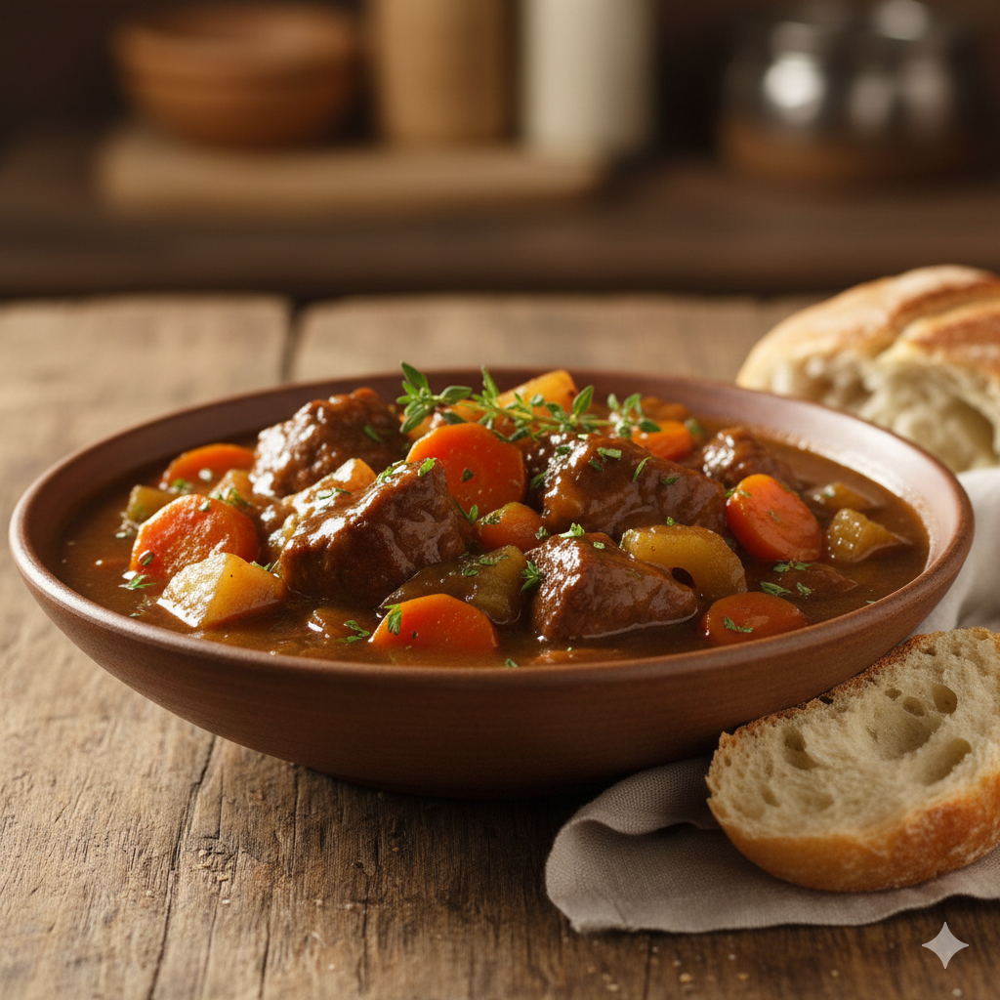

Classic Beef and Vegetable Stew
Home

Description
This hearty beef stew is the ultimate cold-weather comfort food, designed to be slow-cooked until the meat is melt-in-your-mouth tender. The base of the stew is a rich, savory gravy thickened naturally by the starches in the potatoes and a touch of flour, flavored with aromatics and beef stock.
The dish is packed with chunky root vegetables like carrots and potatoes, which absorb the deep, umami flavors of the beef. A splash of Worcestershire sauce and a hint of thyme provide a complex, herbal finish that makes every spoonful feel like a warm hug.
Ingredients
- 2 lbs beef stew meat (chuck roast), cut into 1-inch cubes
- 1/4 cup all-purpose flour
- 3 tbsp vegetable oil
- 4 cups beef broth
- 2 large carrots, peeled and sliced into thick rounds
- 3 medium potatoes, peeled and cubed
- 1 medium yellow onion, chopped
- 2 stalks celery, sliced
- 1 tbsp Worcestershire sauce
- 2 cloves garlic, minced
- 1 tsp dried thyme
- 2 bay leaves
- Salt and black pepper to taste
Steps
- Dredge the Beef: Toss the beef cubes in flour, salt, and pepper until lightly coated. This helps brown the meat and thicken the stew later.
- Brown the Meat: Heat oil in a large pot or Dutch oven over medium-high heat. Brown the beef in batches to avoid crowding the pan. Once browned, remove meat and set aside.
- Sauté Vegetables: In the same pot, add the onion, garlic, and celery. Cook until the onions are translucent and have scraped up the browned bits from the bottom of the pot.
- Simmer: Return the beef to the pot. Pour in the beef broth and Worcestershire sauce. Add the thyme and bay leaves. Cover and simmer on low heat for about 1 hour.
- Add Root Vegetables: Stir in the carrots and potatoes. Continue to simmer, covered, for another 45–60 minutes or until the beef and vegetables are completely tender.
- Final Seasoning: Remove the bay leaves. Taste the stew and add more salt or pepper if needed before serving in deep bowls.